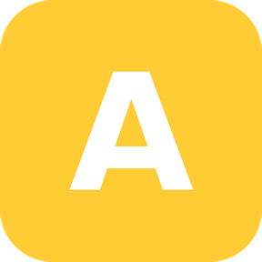

Six Stream Deck plugins. One key each.
Free, open-source (MIT) Elgato Stream Deck plugins that turn a video client's own keyboard shortcuts — or an app's own actions — into physical keys. Built and maintained by Pavel Kotyza.
If you run Axis cameras, start here.
Whatever you watch your Axis cameras through, there's a deck for it: AXIS Camera Station Edge, AXIS Camera Station Pro & 5, Genetec Security Desk, and Milestone XProtect Smart Client. Each one wraps that client's own documented keyboard shortcuts — playback, PTZ, alarms, bookmarks, view navigation — plus any camera or view by number, so a stock installation works with no server-side configuration.


The camera itself, and Claude.
Round out the family: one deck talks straight to the camera over VAPIX/CamStreamer, no VMS involved; the other puts the Claude desktop app on physical keys.
